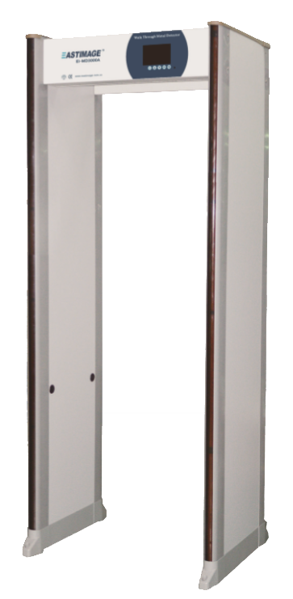

|  |
Product Instruction
EI-MD3000A high sensitivity digital walkthrough metal
detector use excellent electromagnetic testing and digital
processing technology, has high detection sensitivity of the
magnetic metal and nonmagnetic metal, and good recognition for
personal items such as coins, keys, belt buckle, etc.
multi-layered overlapping coil design, with high-brightness
LEDs to show the horizontal position of metal objects accurately,
which can be easy for operator to make judgment.
|
Technology Features
High detection sensitivity for the magnetic metal,
non-magnetic metal and alloy.
Self-diagnostic program, power-on self-test, modular
structure, multi-language selection, the system automatically wake
up.
Highly integrated DSP digital processing technology, no
need tools to adjust, performance is more stable, more convenient
after-sales service
24 detecting area, each area can set sensitivity alone.
Has 300 effective sensitivity
High-brightness color LCD; display function of power-on
diagnose.
30 preset detection program.
100 optional frequency
Real-time monitor of background environment interference
|  |